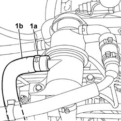
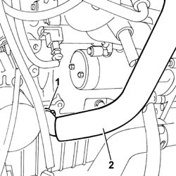
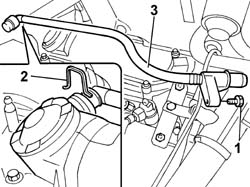
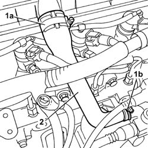

1080D10 PIPE CARRYING ENGINE OIL VAPOURS FROM INTAKE TO SEPARATOR - R + R
- Path
- Procedures > 10 ENGINE UNIT > 1080 EXHAUST EMISSION CONTROL SYSTEM > 1080D CRANKCASE VAPOUR/GAS RECIRCULATION SYSTEM > 1080D10 PIPE CARRYING ENGINE OIL VAPOURS FROM INTAKE TO SEPARATOR - R + R
- Kind
- repair procedure (removal / refitting; the operation number is the code)
- Applies to
- engines: 2.0 16V, 2.0 JTD 8V, 2.3 JTD 16V; all production periods
- Interactive page
- https://sloeber94.github.io/elrnDB-fDct/en/#/244000905
Applies to: engines: 2.0 16V; all production periods
 Removing
Removing
 Refitting
Refitting1. Open the retaining band (1a) and release the hose (1b).

Applies to: engines: 2.0 16V; all production periods
1. Open the fastening band.
2. Release the pipe from the crankcase and remove it.

Applies to: engines: 2.0 16V; all production periods
Refitting
Removing- Fit the pipe in the housing and restore the fastening bands.
Applies to: engines: 2.3 JTD 16V; all production periods
Removing
RefittingSee in Op. 1048A21
- Disconnect the pipe connected to the hose from the filter casing to the turbocharger.
1. Undo the bolt fixing the rigid connector to the rigid air supply pipe to the heat exchanger.
2. Disconnect the pipe from the separator, lifting the fastening spring.
3. Remove the engine oil vapour pipe.

Applies to: engines: 2.3 JTD 16V; all production periods
Refitting
Removing- Fit the oil vapour pipe in the housing and secure it to the separator using the spring.
- Tighten the bolt fixing the vapour pipe to the rigid air supply pipe to the heat exchanger.
- Connect the flexible pipe connected to the hose from the filter casing to the turbocharger to the rigid connector.
See in Op. 1048A21
Applies to: engines: 2.0 JTD 8V; all production periods
Removing
Refitting1. Disconnect the pipe from the tappet cover (1a) and from the oil vapour separator (1b).
2. Remove the oil vapour pipe.

Applies to: engines: 2.0 JTD 8V; all production periods
Refitting
Removing- Fit the oil vapour pipe in the housing and connect the two ends to the tappet cover and to the oil vapour separator.